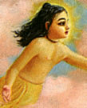

|

|
VISVARUPA was the elder
brother of Lord Caitanya. He is considered a partial expansion of Lord Nityananda.
At an early age he left home to take sannyasa. In 1431 he disappeared in
Pandarpura in the district of Solapura, India. (See Sri Caitanya- caritamrta, Adi-lila 10.106, 13.74-80, and 15.11-14 and Madhya- lila 9.299-300.) |
|
| © 2002-2004 ISKCON |